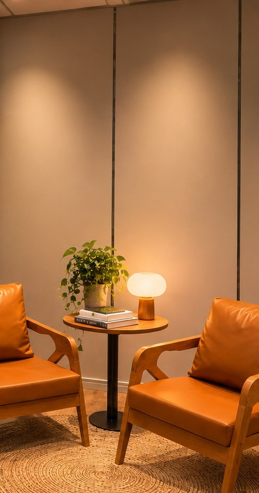

FOTO (tela cheia): pessoa de verdade se movendo no dia a dia
do trabalho, como subir a escada ou caminhar no intervalo.
Luz natural, cores vivas, sem cara de academia ou de anúncio.
@fairhealth.br01/06
Dia Mundial do Diabetes · 14/11
Estilo de vida
também é
tratamento sério.
Estilo de vida
−58%
Remédio
−31%
Risco de diabetes em pessoas com pré-diabetes, contra placebo · DPP, NEJM, 2002
O que a ciência mostrou →
@fairhealth.br02/06
O tamanho do problema
16,6
milhões de brasileiros
vivem com diabetes.
Adultos de 20 a 79 anos, 6º país com mais casos · IDF Diabetes Atlas, 11ª ed. (2025), estimativas de 2024
1 em cada 3
não sabe que tem.
Mesmo assim, “cuide da alimentação e se mexa” ainda soa como a parte menos séria do tratamento.
Parece conselho. A ciência trata como tratamento.
FOTO: rotina possível no trabalho. Marmita colorida
sobre a mesa, ou colegas caminhando no intervalo.
Horizontal (1080x440), luz natural.
@fairhealth.br03/06
O estudo
O que fez o grupo
do estilo de vida.
3.234
adultos com pré-diabetes
150 min
de atividade por semana
7%
do peso: a meta de perda
O risco caiu 58% nesse grupo e 31% no do remédio, contra placebo. O remédio também ajuda e, muitas vezes, é necessário.
Diabetes Prevention Program, NEJM, 2002: 27 centros nos EUA, 2,8 anos em média. Não substitui orientação médica.
Conhece alguém que acha que estilo de vida
é “só conselho”? Mande este post.
@fairhealth.br04/06
O que fez a diferença
Não foi o conselho.
Foi o acompanhamento.
16
encontros individuais nas primeiras 24 semanas
Um profissional acompanhando cada pessoa. Depois, encontros mensais. (1 ponto = 1 encontro)
−27%
no risco, em média, em 15 anos de acompanhamento, mesmo com o programa oferecido depois a todos os grupos.
DPP (NEJM, 2002) e DPP Outcomes Study (Lancet Diabetes & Endocrinology, 2015).
Mudar sozinho é difícil. Com alguém junto, fica possível.

@fairhealth.br05/06
No Escritório do Cuidado
Medicina do
Estilo de Vida é
método,
meta e
retorno.
Atendimento dentro da empresa e um plano individual, revisto a cada retorno, nos 7 pilares:
Alimentação saudável
Movimento
Sono de qualidade
Gerenciamento de estresse
Manejo de vícios
Relacionamentos
Espiritualidade e propósito
Tratamento sério também cabe na rotina.
@fairhealth.br06/06
E na sua empresa?
Cuidar da saúde
das pessoas é
conselho ou
acompanhamento?
No Escritório do Cuidado, a Medicina do Estilo de Vida chega com atendimento dentro da empresa e retornos para rever o plano.
Comente CUIDADO
e enviamos na DM como funciona o diagnóstico gratuito.
Na sexta: como levar a fairhealth para a sua empresa.
 @fairhealth.br
@fairhealth.br